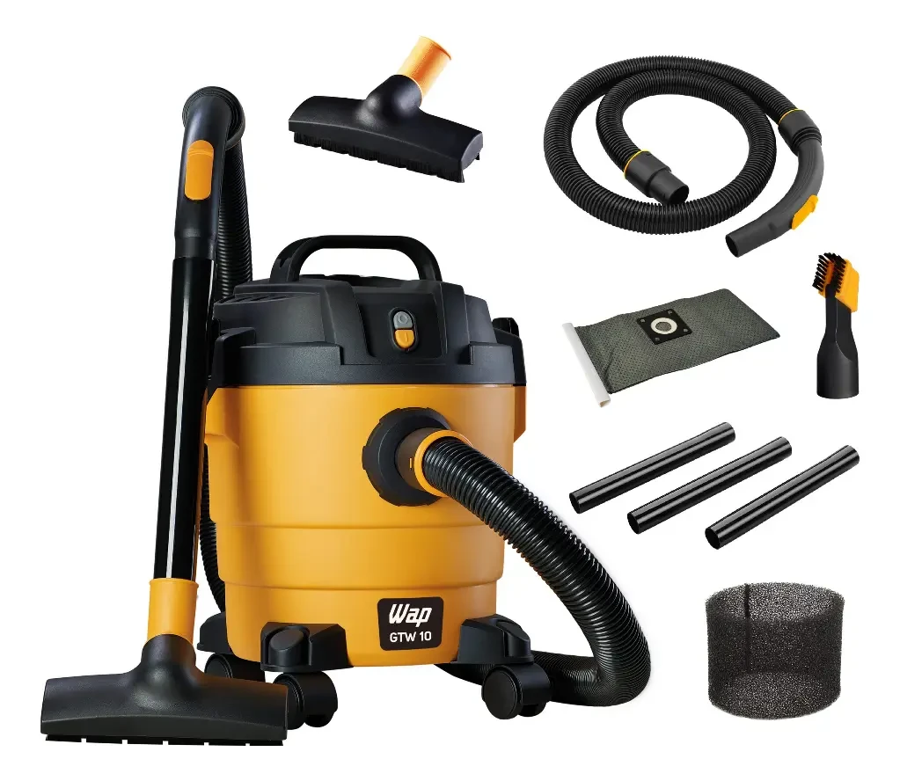
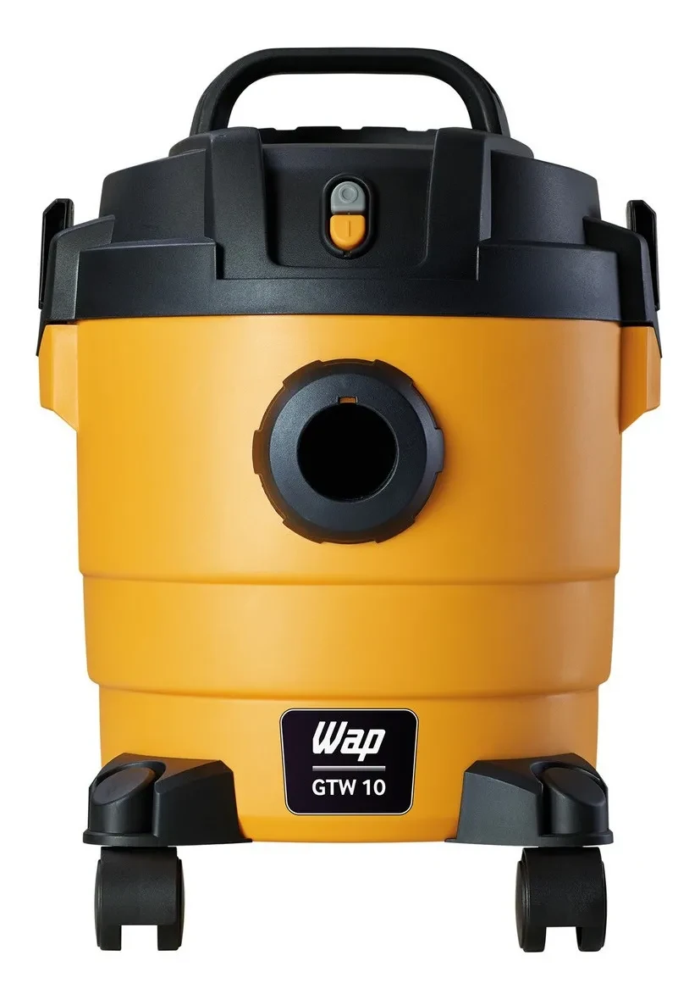

Aspirador de Pó e Água WAP GTW 10 1400W 10L
Aspirador WAP GTW 10 compacto, com 1400W e capacidade de 10 litros para aspirar pó e líquidos.


Confira a oferta atual
Preço, estoque, frete e condições podem mudar na loja. Confira os dados atualizados antes da compra.
Ver oferta no Mercado LivreTransparência: este site pode receber comissão por compras realizadas por links de afiliado, sem custo adicional para você.